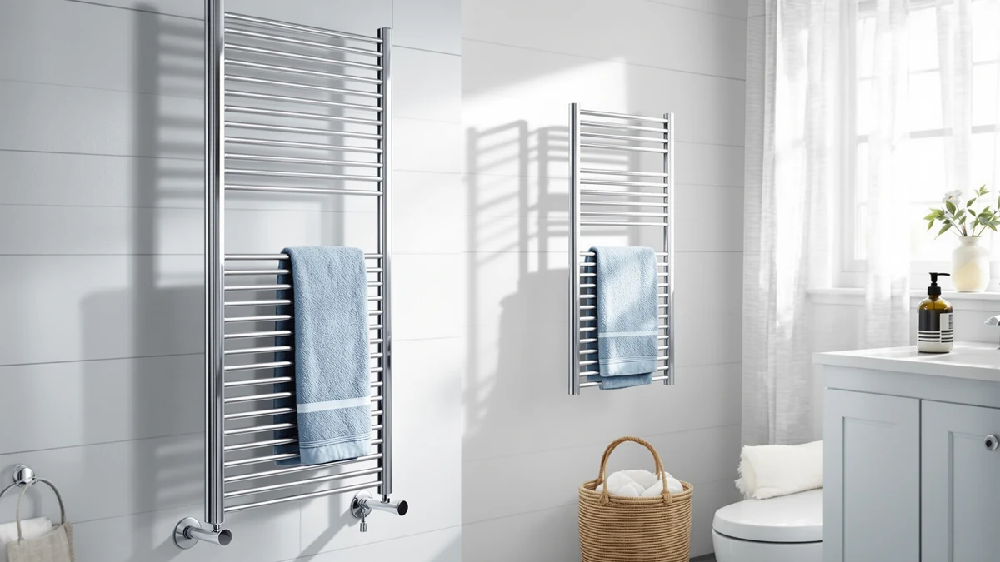

Best Freestanding vs Wall Mounted (2026) | Best Towel Warmers
Prices and picks verified as of August 2026. Independent, reader-supported reviews.


Things to Know Before You Buy
- Freestanding warmers plug into a standard outlet and need no installation, so they suit renters and anyone who wants to move the unit between rooms.
- Wall-mounted racks sit flat against the wall and free up floor space, which makes them the better fit for a small or narrow bathroom.
- Mounting style does not set the heat. Bar count and wattage decide how fast a towel warms, and both styles come in fast and slow versions.
- Wall-mounted units cost more once you add screws, anchors, or an electrician, while freestanding stands carry no install cost beyond the box price.
- A few convertible models, like the Colliford, install either way, so you can start freestanding and mount it later.
The freestanding vs wall-mounted question is the first fork you hit when you shop for a heated towel rack, and it shapes everything after it: where the unit goes, how much you spend, and whether you can take it with you. Both styles do the same core job, pulling moisture out of a damp towel and keeping it warm, so the choice comes down to your bathroom and your living situation rather than heat output.
You will see the same warmer sold in both forms, and a couple of models switch between them. We line up the picks below against each other: the freestanding Chomolhari tower, the convertible Colliford, and the wall-mounted DAWEYEAL nine-bar rack. By the end you will know which side fits a rental, a small powder room, or a permanent main bath.
Quick Answer
Neither style wins outright. Freestanding is better if you rent, want zero installation, or like to move the warmer between bathrooms; the Chomolhari tower covers that case for $129.99. Wall-mounted is better if your bathroom is small and you want the floor clear, where the DAWEYEAL nine-bar rack at $228.88 frees up space and carries a larger heated surface.
What is Freestanding?
A freestanding towel warmer stands on its own feet or a weighted base and plugs into a regular wall outlet. You unbox it, attach the base, and set it on the floor next to the tub or shower. Nothing screws into the wall, and nothing connects to your home wiring, so a freestanding unit is the closest thing to a plug-and-play appliance in this category.
That design is the whole appeal. The Chomolhari tower, for example, gives you six heated bars in a vertical stand you can carry from the main bath to a guest room or even to a laundry area. When you move apartments, it goes in the moving box with the rest of your things. There are no holes to patch and no deposit to lose, which is why freestanding is the default pick for renters.
The trade-off is the floor. A freestanding stand needs a clear patch of about one to two square feet, and the power cord has to reach an outlet without crossing a walkway where someone could trip. In a roomy bathroom that is a non-issue. In a tight powder room, the stand can feel like one more thing crowding the space, which is exactly where a wall-mounted rack pulls ahead.
What is Wall Mounted?
A wall-mounted towel warmer bolts to the bathroom wall, usually with a set of screws and anchors, and sits flat like a ladder rack or a row of horizontal bars. Some plug into a nearby outlet, while higher-end units hardwire directly into your electrical, which hides the cord and gives the rack a clean built-in look. Either way, the unit lives in one fixed spot for the life of the install.
The payoff is space and presence. Because the rack rides on the wall, it claims zero floor area, so a small or narrow bathroom keeps its open feel. The DAWEYEAL nine-bar model shows what you get for mounting on the wall: nine heated bars spread across a wide panel, enough surface to warm two large bath towels at once, mounted at the height you actually reach for them.
The catch is commitment. Mounting means drilling into tile or drywall, finding studs or using proper anchors, and, for hardwired models, paying an electrician. That work pays off in a home you own, but it rules the style out for most renters and makes it a poor choice if you expect to redo the bathroom soon. Once the holes are in, moving the rack means patching and repainting.
Head-to-Head: Build Quality & Durability
On build, the gap between the two styles is smaller than the price tags suggest. Both styles use the same stainless steel bars and the same sealed heating elements, and a good stainless rack resists the constant humidity of a bathroom for years whichever way it mounts. The difference shows up in how each one handles stress.
A freestanding stand has to stay upright on its own, so its durability depends on the base. A wide, weighted foot like the one under the Chomolhari tower keeps it stable when you yank a towel off, but a light or narrow base can rock or tip, and a tipped unit with a hot element is the main safety knock against the style. Check that the base feels heavy and planted before you buy.
A wall-mounted rack borrows its stability from the wall, so it cannot tip at all once it is anchored into studs. That is the structural advantage of going wall-mounted. The flip side is that the whole load rides on your fasteners, and a rack screwed into drywall without proper anchors can pull loose over time. Mounted correctly, a unit like the DAWEYEAL nine-bar rack is the more rugged long-term fixture; mounted lazily, it is the one that ends up on the floor.
Head-to-Head: Price & Value
On price, freestanding usually wins once you count the full cost. The Chomolhari freestanding tower lands at $129.99, and that is the whole bill, since you plug it in and walk away. The DAWEYEAL wall-mounted rack runs $228.88 before you buy anchors or pay an electrician for a hardwired hookup, so the real spend climbs higher. Even a budget freestanding unit like the ELEGANTLIFE at $89.99 undercuts most wall racks.
Value, though, is not the same as price. A wall-mounted rack adds a permanent fixture that can lift the look and resale appeal of a bathroom you own, while a freestanding stand stays a movable appliance. If you plan to keep the home, the higher up-front cost of mounting buys something the freestanding unit cannot. If you rent or move often, the freestanding stand wins on value because it leaves with you instead of staying behind.
Head-to-Head: Use Experience
Day to day, the mounting style changes how the warmer fits into your routine more than how warm your towel gets. A freestanding tower lets you put heat exactly where you want it. Move it next to the shower in winter, slide it into a corner when guests come, or wheel it toward the laundry to dry a delicate item. You also reach the outlet easily, so flipping it on and off is simple.
The downside of the freestanding stand is clutter and cords. The unit occupies floor you might want for a scale or a basket, and the visible power cord has to run somewhere, which looks less tidy than a clean wall install. In a busy household bathroom, a stand on the floor is also one more thing to step around in the dark.
A wall-mounted rack disappears into the room. It sits at towel height, keeps the floor clear for mopping, and, on hardwired models, hides the cord entirely. The trade is that it never moves: you reach for your towel in the same fixed spot every time, and you cannot relocate the heat to where you are standing. For a small bathroom where floor space is the scarce resource, that fixed, out-of-the-way placement is the better daily experience.
When to Choose Freestanding
Choose freestanding when you cannot or do not want to drill into the wall. That covers most renters, anyone in a home they plan to leave soon, and people who simply dislike permanent changes. This is the no-commitment side: you plug the unit in, use it, and pack it up when you move. A tower like the Chomolhari at $129.99 gives you six heated bars with zero install and zero deposit risk.
Freestanding also wins when you want flexibility. Pick it if you like to move heat around, share one warmer between two bathrooms, or use it to dry hand-washed clothing in another room. The style suits larger bathrooms where giving up a square foot of floor costs you nothing. If your budget is tight, freestanding usually gets you heated towels for less, since a unit like the ELEGANTLIFE starts at $89.99 with no added install cost.
When to Choose Wall Mounted
Choose wall-mounted when floor space matters and the bathroom is yours to modify. This is the side for homeowners and long-term residents who want a clean, built-in fixture rather than an appliance on the floor. A small or narrow bathroom benefits most, since the rack rides on the wall and leaves the floor open for mopping and movement. The DAWEYEAL nine-bar rack at $228.88 shows the upside, with a wide heated panel that holds two big towels.
Wall-mounted is also the better call when you want maximum towel capacity, a hardwired install with no visible cord, or a fixture that adds to the bathroom long term. Pick it if you have a free stretch of wall near the shower, you are comfortable drilling into tile or hiring help, and you do not plan to rearrange the room. If you might want to switch later, a convertible model like the Colliford mounts to the wall now and lifts off to stand on its own if your plans change.
Our Top Picks
These three warmers cover both sides of the choice. The Chomolhari is our freestanding pick, the Colliford is the convertible middle ground that installs either way, and the DAWEYEAL is the wall-mounted choice for a space-tight bathroom.

Editor’s Pick
Chomolhari Tower Warmer Rack 6
The freestanding pick. Six heated bars on a weighted base, plug it in anywhere, and take it with you when you move. Ideal for renters.
$129.99
Check Price on Amazon
Best Value
Colliford Towel Warmer Stainless Steel
The convertible middle ground. This stainless steel unit installs freestanding or wall-mounted, so you can start one way and switch later for the lowest price here.
$99.99
Check Price on Amazon
Premium Choice
DAWEYEAL 9 Bars Wall Mounted
The wall-mounted pick. Nine bars on a wide panel warm two large towels at once and keep the floor clear, the right call for a small bathroom you own.
$228.88
Check Price on AmazonIs a freestanding or wall-mounted towel warmer better for renters?
Freestanding is the safer choice for renters.
Do wall-mounted towel warmers heat better than freestanding ones?
Heating depends on the heating element and bar count, not the mounting style.
Frequently Asked Questions
Is a freestanding or wall-mounted towel warmer better for renters?
Freestanding is the safer choice for renters. It plugs into a standard outlet, leaves no holes in the wall, and moves with you when the lease ends. Wall-mounted racks need screws and often a hardwired connection, which most landlords will not approve. If you rent, a freestanding tower like the Chomolhari lets you have heated towels without risking your deposit.
Do wall-mounted towel warmers heat better than freestanding ones?
Heating depends on the heating element and bar count, not the mounting style. A nine-bar wall rack and a tall freestanding tower with the same wattage warm a towel in about the same time. Wall-mounted hardwired models can carry larger elements, so the biggest, hottest racks tend to be wall-mounted, but plug-in versions of both styles perform similarly. Compare wattage and bar count rather than the freestanding vs wall-mounted label.
Does a wall-mounted towel warmer save floor space?
Yes. A wall-mounted rack sits flat against the wall and takes up no floor space, which makes it the better pick for a small or narrow bathroom. A freestanding stand needs a clear patch of floor about one to two square feet and works best where you have room to spare beside the tub or shower.
Can a towel warmer be both freestanding and wall-mounted?
Some can. Convertible models ship with both a base and a wall-mount kit, so you choose the setup at install time and can change it later. The Colliford stainless steel warmer works either way, which makes it a good hedge if you are not sure whether you will stay in your current place. Most units, though, are built for one mounting style only, so check the listing before you buy.
Which is cheaper, freestanding or wall-mounted?
Freestanding is usually cheaper once you count installation. A freestanding tower carries only the box price, while a wall-mounted rack adds anchors, screws, and sometimes an electrician for a hardwired hookup. In our picks the freestanding Chomolhari runs $129.99 against $228.88 for the wall-mounted DAWEYEAL, and a budget freestanding model like the ELEGANTLIFE starts at $89.99.
Final Verdict
The freestanding vs wall-mounted answer comes down to your walls and your plans, not the heat. If you rent, want zero installation, or like moving the warmer between rooms, go freestanding with the Chomolhari Tower Warmer at $129.99. If you own a small bathroom and want the floor clear with a built-in look, mount the DAWEYEAL nine-bar rack at $228.88, and if you want to keep both doors open, the convertible Colliford installs either way.